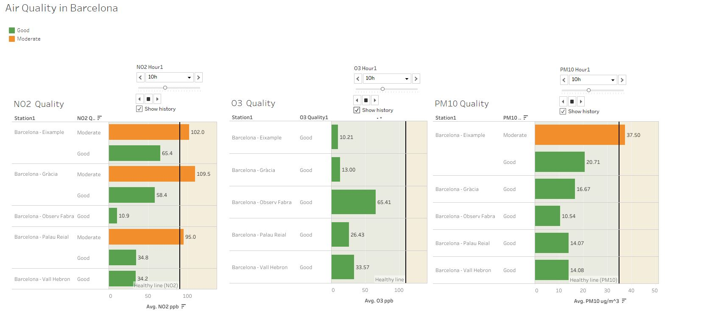
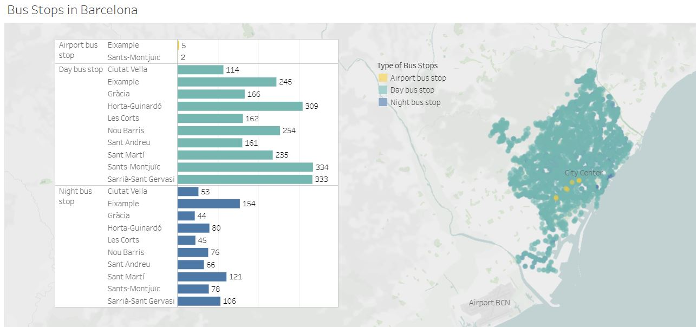
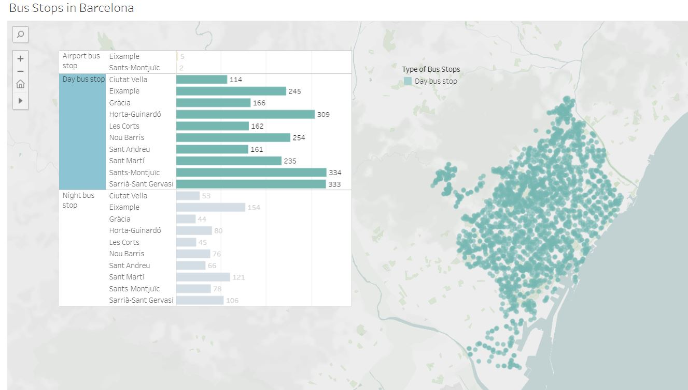
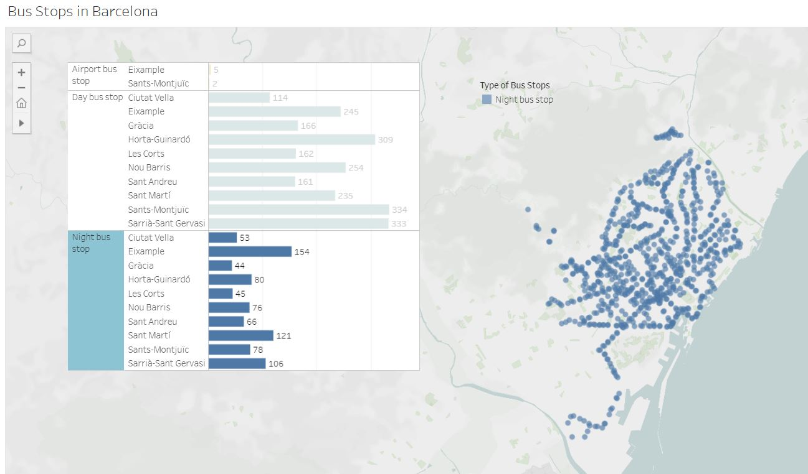
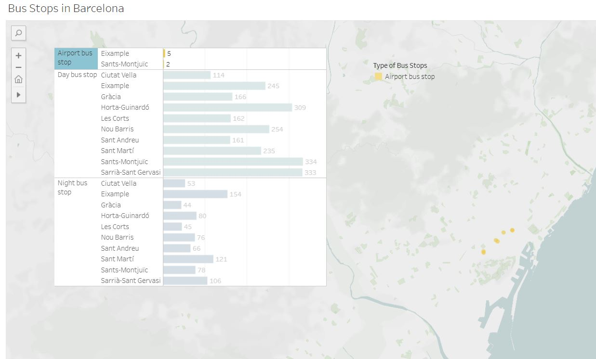

Exploring Barcelona
Goal
A thorough comprehension of the various components involved in city development and an exploration of potential enhancements to different aspects of the city can lead to a better understanding of overall livability of a city. This project employs data visualizations to investigate several aspects of Barcelona, such as population, city safety, air quality, and transportation accessibility. The aim is to identify which neighborhoods are desirable for living in Barcelona and to pinpoint which specific areas of the city could benefit from further improvements.
Data
Source:
Open Data BCN: https://opendata-ajuntament.barcelona.cat/data/en/dataset
This is a group project and my portion of the project is mainly focus on Air Quality and Transportaion in Barcelona.
Air Quality
There are three types of air pollutants to determine the air quality of the city of Barcelona.
O3 (tropospheric Ozone)
NO2 (Nitrogen dioxide)
PM10 (Particulate Matter)
There are three animated bar charts per hour for each air pollutant utilizing data from the primary stations. Each chart includes a reference line representing the healthy standard. Typically, the air quality index color codes range from green to purple, signifying levels from healthy to hazardous. However, our charts use green to indicate good air quality and orange to indicate moderate air quality.
Click photo to Tableau Visualization:
https://public.tableau.com/app/profile/seliena.mei/viz/Barcelona_16675193980420/AirQuality
- According to the NO2 chart, if the station records levels over 90 ppb (parts per billion), the air quality will be classified as moderate. Based on the chart, it is evident that some locations in Eixample and Gracia experience moderate air quality at different times throughout the day. Conversely, the Vall Hebron and Observ Fabra stations consistently maintain good air quality levels.
- Based on the PM10 chart, if a station records levels above 35 ug/m3 (micrograms per cubic meter), the air quality will be classified as moderate. The Eixample station is measured as moderate for the entire day (24 hours), while the remaining stations consistently maintain good air quality levels.
- According to the O3 chart, if the station is over 110 ppb (parts per billion), then air quality will be moderate. However, there is no moderate air quality for all the stations throughout the day.
- Eixample and Gracia exhibit moderate air quality at specific times of the day, while Station Vall Hebron and Observ Fabra consistently maintain good air quality.
- The air quality is optimal at Observ Febra and Vall Hebron. Based on the map, it is evident that these two stations are situated near mountains or located further away from highly populated cities.
Bus Stops
There are many bus stops throughout the city of Barcelona.
   Click photo to Tableau Visualization:
https://public.tableau.com/app/profile/seliena.mei/viz/BusStopsinBarcelona/Busstops
- The majority of the bus stops within the city are designated as day bus stops. While night bus stops are available in almost every district, they are not as concentrated as day bus stops. Additionally, Eixample is the sole district with airport bus stops.
Public Transportations
There are different types of public transportation throughout the city: airport train, cableway, funicular, maritime station, railway, RENFE, tram, and underground railway, other than bus.
- Underground train is an underground metro that connects throughout the city of Barcelona. Based on the map, we can see that most of the transportation is the underground train. It is the most convenient transportation in the city.
- Railway FCG (Ferrocarrils de la Generalitat de Catalunya) connects Barcelona with other cities, such as the nearby town in Catalonia, Spain.
- RENFE (Red Nacional de los Ferrocarriles Españoles) is a Spanish national railway and operates at normal and high speed for short and long-distance.
- The airport train is a railway train that connects to the airport and the city.
- The funicular is a small carriage that moves up and down a hill. According to the map, we can only see funiculars in the mountain area.
- The maritime station is not a type of transportation. It is a train station that is located near the port in the district of Sants Montjuic.
- Based on the map, the tram stations are all clustered together and only available in certain areas.
Click photo to Tableau Visualization:
https://public.tableau.com/app/profile/seliena.mei/viz/BarcelonaPublicTransportations/TransportationType#1
Exiample and Sants-Montjuic are the most easily accessible districts, thanks to their proximity to various modes of public transportation. Whether you need to travel to the airport, leave the city, reach the port, or simply enjoy a cableway ride, all options are conveniently located in these areas.